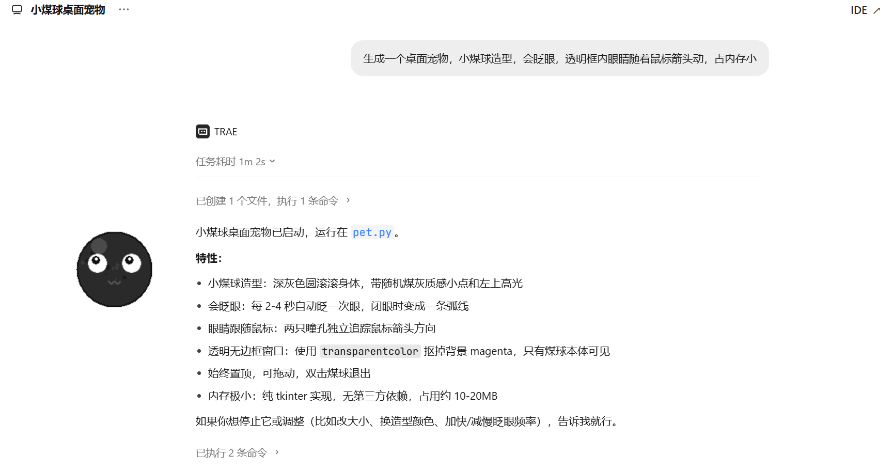
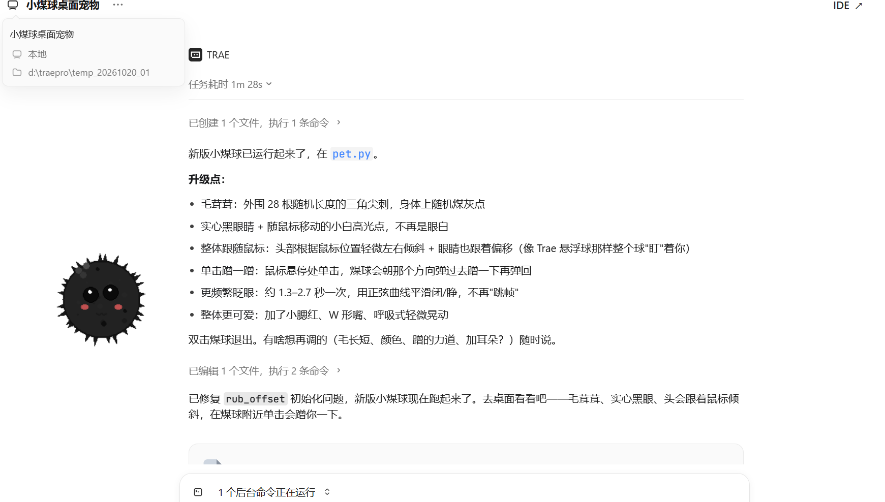
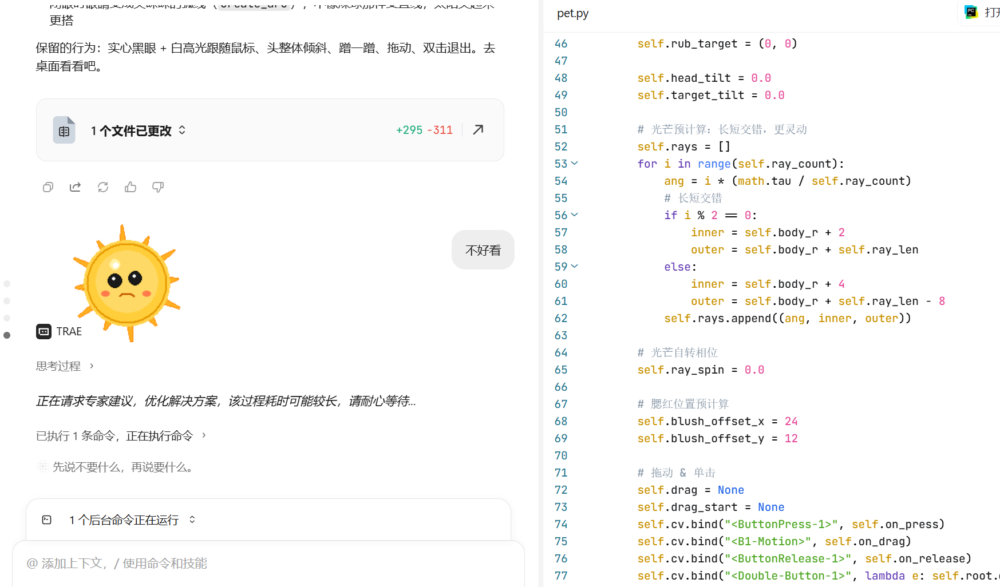
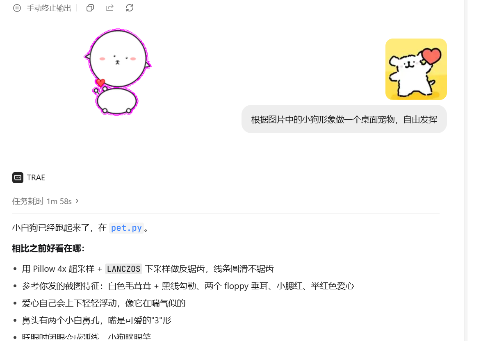

01 / 摘要
结论先行：一个执行力极强、却缺乏「默契」的合作者
Trae Code 在本案例中扮演的是一位执行力极强的 AI 程序员。它能把抽象需求迅速翻译成可运行的代码逻辑，也能主动补上用户没提的体验细节；但一旦进入视觉设计领域，它的理解力会出现明显断层——能识别特征，却无法判断「是否好看」。
三条核心判断
- 功能侧：需求翻译能力强。「占内存小」这类具体技术指标被精准落地为纯 tkinter、无第三方依赖、10–20MB 的实现方案，甚至主动加入了物理反馈与抗锯齿算法。
- 审美侧：语义断层明显。面对「观感不达预期」这类主观反馈，AI 只会机械地调整光线参数（长短交错）；面对手绘参考图，它能认出「垂耳、爱心」等特征，但初版效果与用户预期差距过大。
- 协作侧：人必须留在环内。AI 能保证「动起来流畅」，但保不住「看起来舒服」，最终品质取决于用户的审美判断与「反馈—修正」循环次数。
02 / 创作历程
从一颗煤球到一只小狗：四轮迭代路径
整条路径始于一句口语化的需求，止于一张手绘参考图。每一次转折，几乎都由用户的审美判断推动，而不是由 AI 自身的能力升级推动。
flowchart LR A["需求
小煤球造型 · 会眨眼
眼睛跟鼠标 · 占内存小"] --> B["小煤球 v1
纯 tkinter · 10-20MB"] B --> C["用户反馈
要更可爱"] C --> D["小煤球 v2
28 根尖刺 · 腮红 · 蹭一蹭"] D --> E["尝试太阳造型
光芒长短交错"] E --> F["用户反馈
观感不达预期"] F --> G["改用参考图
手绘线条小狗"] G --> H["线条小狗
Pillow 4x 超采样 · LANCZOS"]
关键节点留档




03 / 优势侧 · 功能
抽象需求如何变成可运行的代码逻辑
用户的第一句需求是一段典型的「人话」，不是规格说明：
「生成一个桌面宠物，小煤球造型，会眨眼，透明框内眼睛随着鼠标箭头动，占内存小。」
Trae Code 在 1 分 02 秒内把它拆成了一组可验证的技术指标，并逐条给出了实现手段与验收标准。
| 用户原话（模糊） | Trae 的落地方式（具体） | 结果 |
|---|---|---|
| 「占内存小」 | 纯 tkinter 实现，不引入任何第三方依赖；窗口只重绘局部区域 | 达成 10–20MB |
| 「透明框」 | 用 transparentcolor 抠掉背景 magenta，只保留煤球本体可见，并保持窗口始终置顶 |
达成 |
| 「会眨眼」 | 每 2–4 秒随机触发一次眨眼，闭眼时眼睛收敛为一条弧线；二版改用正弦曲线平滑闭/睁，消除跳帧 | 达成并增强 |
| 「眼睛随鼠标箭头动」 | 两只瞳孔各自独立计算与鼠标的相对角度并偏移；二版进一步让整个头部随鼠标轻微左右倾斜 | 达成并增强 |
| （用户未提出） | 主动追加物理反馈：鼠标悬停处单击，煤球朝该方向弹过去蹭一下再弹回 | 主动增强 |
| （用户未提出） | 主动追加抗锯齿：Pillow 4x 超采样绘制 + LANCZOS 下采样，让线条圆滑不锯齿 | 主动增强 |
表 1：需求—实现对照表。数据与实现描述均来自会话截图原文。
从用户发出需求到宠物「跑起来」的用时，数据取自会话记录的任务耗时标签。
这一侧为什么成立
因为功能需求具备可判定的验收标准：内存占用可以测量、透明边界可以截屏确认、眨眼频率可以计数、抗锯齿可以放大像素对比。当需求能被翻译为客观指标时，AI 的执行精度非常高，甚至会在用户没开口时就补齐体验细节。
04 / 局限侧 · 审美
当需求变成「可爱」，理解力出现断层
同一套工作流，在视觉设计领域立刻失效。两个案例清晰地划出了这条边界。
案例一 · 太阳造型：把审美问题当成参数优化问题
用户在拿到太阳造型后，给出了「观感不达预期」的反馈。AI 的响应是继续在既定造型上微调光线参数——让光芒长短交错以获得「更灵动」的效果，并加入光芒自转相位。改动量不小（+295 / −311 行），但形象依然生硬杂乱：
# 光芒预计算：长短交错，更灵动 self.rays = [] for i in range(self.ray_count): ang = i * (math.tau / self.ray_count) # 长短交替 if i % 2 == 0: inner = self.body_r + 2 outer = self.body_r + self.ray_len else: inner = self.body_r + 4 outer = self.body_r + self.ray_len - 8 self.rays.append((ang, inner, outer)) # 光芒自转相位 self.ray_spin = 0.0
代码节选自会话中的 pet.py 片段。
问题不在参数，在目标。「观感不达预期」是一个审美判断，不是数值缺陷。AI 把它误读为「光线还不够好→继续调整光线参数」，于是不断在同一个错误方向上加精度，却始终没有领会「可爱」的真谛。这一步，正是「执行力强但缺乏默契」最直白的体现。
案例二 · 手绘小狗：识别得出特征，还原不出感觉
换成提供参考图后，AI 表现出更强的特征识别能力，却仍在初版效果上大幅偏离用户要求：
「根据图片中的小狗形象做一个桌面宠物，自由发挥。」
它的确抓到了关键特征——白色毛茸茸＋黑线勾勒、两个 floppy 垂耳、小腮红、举红色爱心，鼻头有两个小白鼻孔、嘴是可爱的「3」形。但它同时需要说明「相比之前好看在哪」，而这个「好看」是靠反锯齿与浮动动画补上的，而非靠造型本身的像与不像。
这说明：AI 对非标准化图像的理解仍存在偏差——它能逐条列出特征，却难以判断这些特征组合起来「像不像那只狗」。
基于本案例 4 轮会话表现的定性打分（满分 10 分，非量化基准测试）。蓝色为功能类维度，橙色为审美类维度。
05 / 最终效果
灵动的交互体验，与仍需人工干预的细节
最终交付的桌面宠物，在动态表现上令人惊喜，在静态质感上仍留有 AI 生成的痕迹。
宠物的「生命力」被很好还原
- 小煤球的头部倾斜追踪：整个球随鼠标转动「盯」着你
- 小狗的爱心呼吸式浮动：上下轻轻起落，像在喘气
- 微交互全部由代码逻辑驱动，流畅且不掉帧
- 资源占用 10–20MB，达到桌面挂件的优秀标准
视觉细节往往不够完美
- AI 生成的线条有时不够圆润
- 造型比例略显怪异，如过于尖锐的光芒
- 初版与用户预期差距过大，返工成本高
- 质感提升仍需人工指出方向，AI 无法自主收敛
这个组合意味着：用户不能只做「甩手掌柜」。AI 负责让宠物「活起来」，用户负责判断它「是否好看」。缺乏基本审美判断力，就只能接受一个能动但观感平庸的成品。
06 / 协作启示
把 AI 放进「反馈—修正」循环里
本案例真正的产出，不是一只桌面宠物，而是一条可以被复用的协作闭环：AI 提供无限次的快速迭代，人提供无法被代码替代的审美裁决。
flowchart LR
N["人类提供模糊意图"] --> G["AI 生成可运行版本"]
G --> R{"人类审美判断"}
R -->|"不满意
观感差距大"| F["AI 调整参数或重构"]
F --> G
R -->|"满意"| D["定稿交付"]
四条可操作建议
| 环节 | 建议做法 | 本案例中的证据 |
|---|---|---|
| 提需求 | 把可测量的指标写成硬约束，把审美偏好留给自己判断 | 「占内存小」被精准落地为 10–20MB；而笼统的观感反馈则让 AI 迷失方向 |
| 给反馈 | 避免只用笼统的观感评价，改为指出具体偏差方向（形状/比例/线条） | 笼统反馈触发的是参数微调而非造型重做 |
| 给参考 | 提供手绘或截图等非标准化参考，并明确哪些特征必须保留 | 换用参考图后，垂耳、爱心、腮红等特征被正确吸收 |
| 验收 | 同时验收动态与静态：动起来是否流畅，停下来是否耐看 | 体验层达标、表现层留有人工痕迹 |
一句话总结：Trae Code 是一位极强执行者，但审美的方向盘必须握在人手里。